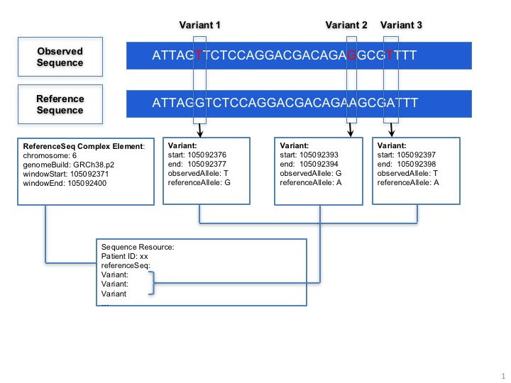
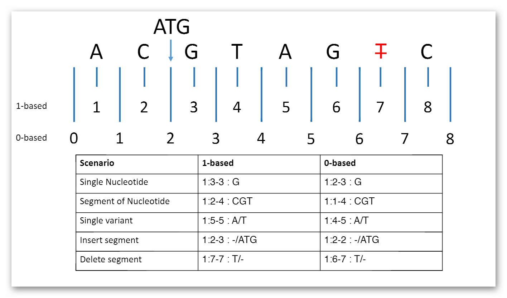
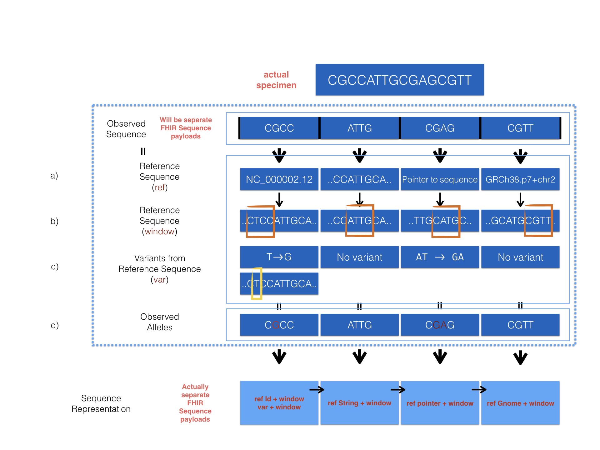
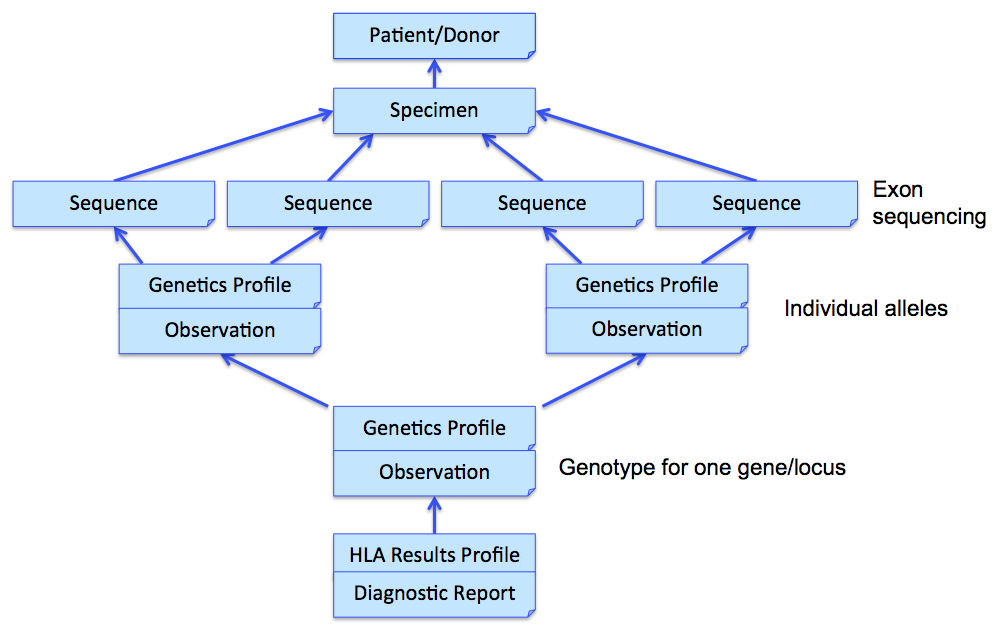
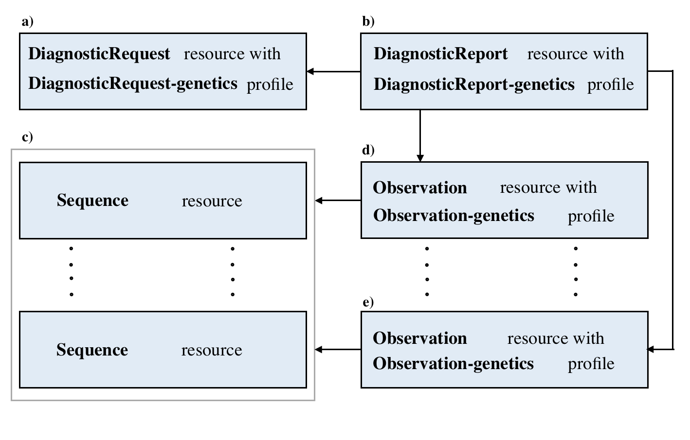
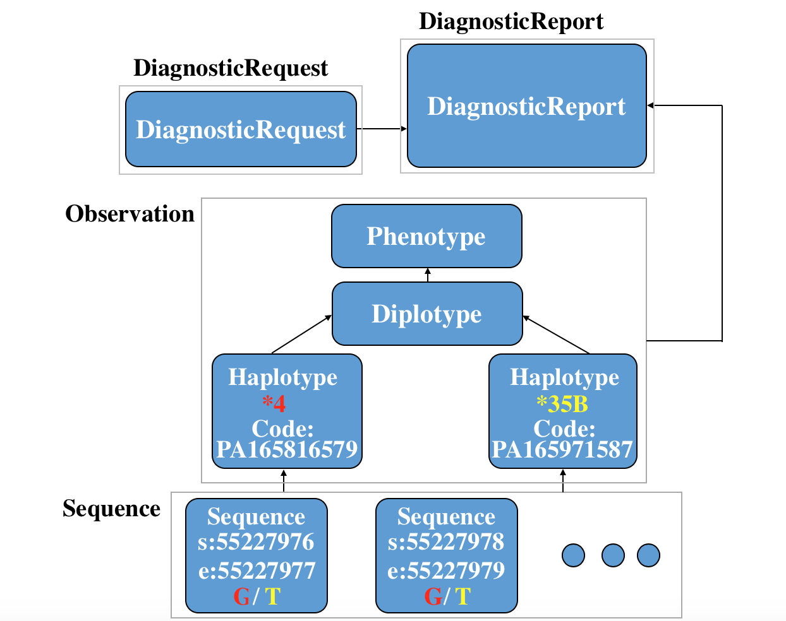
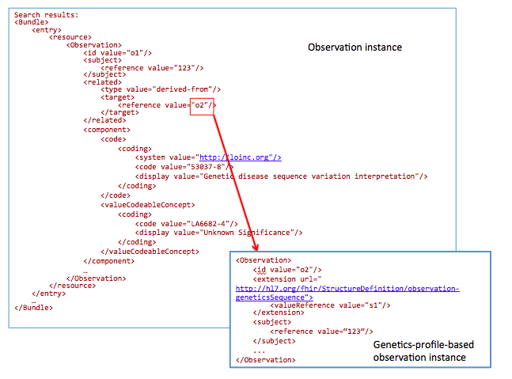
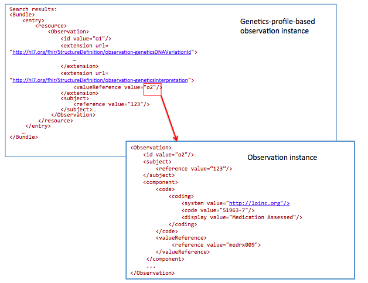
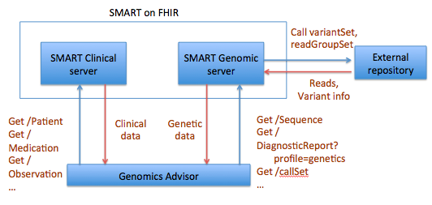
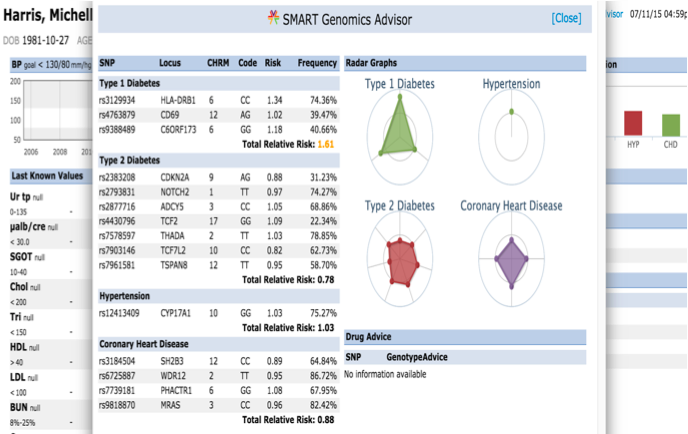

Current Build

 Diagnostics
DiagnosticsClinical Genomics  Work Group Work Group | Maturity Level: 1 | Ballot Status: STU 3 |
Table of Contents
Rapid advances in sequencing technologies, clinical genetics tests for whole genome and exome sequencing are allowing sophisticated genetics testing to be used by providers and patients in clinical decisions. Results from such tests are used to identify distinct genetic variants that may contribute to syndromes, conditions and/or predictive responses to treatments. The implementation of precision medicine will depend upon having such data to diagnose patients, choose medications, and predict the course of disease and care, but will require standards and effective user interfaces.
A current technical challenge exists in interoperability, or allowing the ability to access and share clinical and genetics data. This interoperability includes collection, coding, and retrieval to scale. An individual's genetic data set is large, complex and requires curation. Unfortunately, incompatible systems and nomenclatures are already in use. A standards based ontology that could be adopted to integrate both genetic data and clinical information systems will be crucial to accelerating the integration of precision medicine and to make sense of genetic testing results in a complete clinical context.
One approach for collecting, coding, and retrieving genetics data comes
from the Global Alliance for Genomics and Health
(GA4GH). The
GA4GH organization has built and is refining an API and data
model for the exchange of full sequence genomic information across multiple
research organizations and platforms. The GA4GH focuses on the needs of
researchers.
A second approach is evolving from Health Level 7 (HL7) through its standards family called Fast Healthcare Interoperability Resources (FHIR). FHIR focuses on clinical needs and systems and has principally focused on standardizing traditional clinical data of the sort in EMR systems using very modern web technology-based ideas. FHIR is attractive because it is relatively easy to implement because it is comprised of a set of modular components called resources, which can be easily and incrementally assembled into working systems. The clinical requirements for genetics data is, relative to genomics research needs, utilitarian and reductive because it is about distilling and extracting particular genetics data produced by ever more sophisticated testing for use at the point-of-care. This has made FHIR a very functional framework to initiate an interoperable clinical genetics data standardization to which multiple stakeholders have contributed to this guide.
Starting in 2014, the HL7 Clinical Genomics Working Group (CGWG) has been drafting the FHIR framework for clinical genetics testing for general adoption. This effort reached its first major milestone on September 23, 2015, when HL7 released its second FHIR Draft Standard for Trial Use (DSTU2). DSTU2 introduced a Standard genetics profile that applies to the FHIR Observation resource. The profile was created according to the FHIR Clinical Genomics Project Scope Statement that authorized its community development. Using this profile, Observation payloads can return genetic testing results in a standardized manner.
Extending Observations rather than creating a new, dedicated FHIR genetics data resource is consistent with the FHIR community mandate because it only adds new resources to an existing resource library when there is a compelling case to do so. We provide the case to add a Sequence resource in this document.
Given the clinical significance of genetic sequence data and the wealth of information that may be retrieved for an individual's health and with metadata for the betterment of public health, we propose to move beyond FHIR DSTU2 Standard Genetics profile on Observation and allow increased granularity and less ambiguity by creating a new resource to be called Sequence. This resource will be used to hold clinically relevant sequence data in a manner that is both efficient and versatile integrating new and as yet undefined types of genomic and other -omics data that will soon be commonly entered into health records for clinical use. Sequence will be leveraged by other FHIR resources, including Observation. This is consistent with how all FHIR resources are designed and used.
The FHIR Clinical Genomics Working Group (CGWG) began discussing such a dedicated resource in 2014. The September 2014 Informative Ballot (“HL7 Clinical Genomics, Domain Analysis Model: Clinical Sequencing Release 1”) provided guiding use cases, which initially informed development of the initial Standard Genetics profile that is found in FHIR DSTU2. The same use cases also led to a second Project Scope Statement in May 2015 (approved by HL7 DESD/OO/FMG) to develop a Sequence resource (“Develop FHIR sequence resource for Clinical Genomics”). A preliminary effort to address these issues has been explored and published in context of the Substitutable Medical Applications and Reusable Technologies (SMART) Platforms Project and described in an article (“SMART on FHIR Genomics: Facilitating standardized clinico-genomic apps ”).
Sequence is designed to hold genetic sequences in blocks relevant to actionable clinical decision-making. Extensions to Sequence address complex cases and can associate it with repositories for retrieving a patient’s full sequence data, such as those defined by GA4GH. Other changes include a suite of genetics profiles for other FHIR resources. In addition, the Observation-genetics profile adds new references so that an Observation can report genetics test results to be integrated into the EHR. There are also new genetics-extension profiles for DiagnosticReport, DiagnosticRequest and FamilyMemberHistory, respectively, to extend them to report genetics results. We have given all of these FHIR genetics profiles the suffix “-genetics” (e.g. “DiagnosticReport-genetics profile”). New profiles on top of DiagnosticReport have been created for reporting HLA genotyping results.
On the following pages, we elaborate upon the rationale for the proposed design, introducing in some detail the following resource and profiles:
With these resource and profiles, FHIR can support a large set of clinical use cases (see Section 9, 10 , and 11) and is thus positioned to address all emergent -omics use cases, including Next-Generation Sequencing (NGS). These tools are simple to implement, will optimize payload sizes, and help developers avoid redundant retrieval of data. Appendix 1 of this document shows how DSTU 2.0 can be mapped to the new additions to the resource.
| Name | Flags | Card. | Type | Description & Constraints |
|---|---|---|---|---|
| ΣI | DomainResource | Information about a biological sequence Only 0 and 1 are valid for coordinateSystem | ||
 | Σ | 0..* | Identifier | Unique ID for this particular sequence. This is a FHIR-defined id |
| Σ | 0..1 | code | aa | dna | rna sequenceType (Example) |
| Σ | 1..1 | integer | Base number of coordinate system (0 for 0-based numbering or coordinates, inclusive start, exclusive end, 1 for 1-based numbering, inclusive start, inclusive end) |
| Σ | 0..1 | Reference(Patient) | Who and/or what this is about |
| Σ | 0..1 | Reference(Specimen) | Specimen used for sequencing |
| Σ | 0..1 | Reference(Device) | The method for sequencing |
| Σ | 0..1 | Reference(Organization) | Who should be responsible for test result |
| Σ | 0..1 | Quantity | The number of copies of the seqeunce of interest. (RNASeq) |
| ΣI | 0..1 | BackboneElement | Reference sequence Only +1 and -1 are valid for strand GenomeBuild and chromosome must be both contained if either one of them is contained Have and only have one of the following elements in referenceSeq : 1. genomeBuild ; 2 referenceSeqId; 3. referenceSeqPointer; 4. referenceSeqString; |
 | Σ | 0..1 | CodeableConcept | Chromosome containing genetic finding chromosome-human (Example) |
| Σ | 0..1 | string | The Genome Build used for reference, following GRCh build versions e.g. 'GRCh 37' |
| Σ | 0..1 | CodeableConcept | Reference identifier ENSEMBL (Example) |
| Σ | 0..1 | Reference(Sequence) | A Pointer to another Sequence entity as reference sequence |
| Σ | 0..1 | string | A Reference Sequence string |
| Σ | 0..1 | integer | Directionality of DNA ( +1/-1) |
| Σ | 1..1 | integer | Start position of the window on the reference sequence |
 | Σ | 1..1 | integer | End position of the window on the reference sequence |
| Σ | 0..* | BackboneElement | Sequence variant |
| Σ | 0..1 | integer | Start position of the variant on the reference sequence |
| Σ | 0..1 | integer | End position of the variant on the reference sequence |
| Σ | 0..1 | string | Allele that was observed |
| Σ | 0..1 | string | Allele of reference sequence |
| Σ | 0..1 | string | Extended CIGAR string for aligning the sequence with reference bases |
| Σ | 0..1 | Reference(Observation) | Pointer to observed variant information |
| Σ | 0..1 | string | Observed sequence |
| Σ | 0..* | BackboneElement | Sequence quality |
| Σ | 1..1 | code | indel | snp | unknown qualityType (Required) |
| Σ | 0..1 | CodeableConcept | Standard sequence for comparison |
| Σ | 0..1 | integer | Start position of the sequence |
| Σ | 0..1 | integer | End position of the sequence |
| Σ | 0..1 | Quantity | Quality score |
| Σ | 0..1 | CodeableConcept | Method for quality |
| Σ | 0..1 | decimal | True positives from the perspective of the truth data |
| Σ | 0..1 | decimal | True positives from the perspective of the query data |
| Σ | 0..1 | decimal | False negatives |
| Σ | 0..1 | decimal | False positives |
| Σ | 0..1 | decimal | False positives where the non-REF alleles in the Truth and Query Call Sets match |
| Σ | 0..1 | decimal | Precision |
| Σ | 0..1 | decimal | Recall |
| Σ | 0..1 | decimal | F-score |
| Σ | 0..1 | integer | Average number of reads representing a given nucleotide in the reconstructed sequence |
| Σ | 0..* | BackboneElement | External repository which contains detailed report related with observedSeq in this resource |
| Σ | 1..1 | code | directlink | openapi | login | oauth | other repositoryType (Required) |
| Σ | 0..1 | uri | URI of the repository |
| Σ | 0..1 | string | Name of the repository |
| Σ | 0..1 | string | Id of the dataset that used to call for dataset in repository |
| Σ | 0..1 | string | Id of the variantset that used to call for variantset in repository |
| Σ | 0..1 | string | Id of the read |
| Σ | 0..* | Reference(Sequence) | Pointer to next atomic sequence |
| Documentation for this format | ||||
The Sequence resource is designed for next-generation sequencing data. Patients’ observed sequences should be represented by recording reference sequence id/string and detected variants. To specify how it proceed, here is a picture below:
Sequence.coordinateSystem: This element shall be constrained into only two possible values: 0 for 0-based system and 1 for 1-based system. Below is the picture that could explain what’s the difference between these two systems:
Here are two examples that clarify the usage in both cases (they represent same segment part):
Sequence.referenceSeq: Four optional ways are provided to represent reference sequence in Sequence resource:
The window selects a range from the reference sequence (or genome) that is used to define building block of a current sequence (e.g. Sequence resource instance 1).
Sequence.referenceSeq.strand: Only two possible values can be made by strand, +1 for plus strand while -1 for minus strand. Since the directionality of the sequence string might be represented in different word in different omics scenario, below are simple example of how to map other expressions into its correlated value:
| Map to +1 | Map to -1 |
|---|---|
| 5′-to-3′ direction | 3′-to-5′ direction |
| Watson | Crick |
| Sense | Antisense |
| Positive | Negative |
Sequence.quality: Quality scores for bases in the sequence. Is is intended to be compliant with emerging regulatory needs needs (eg: those found at PrecisionFDA ).
Sequence.variant: This complex element is used for encoding sequence. When the information of reference sequence and variants are provided the observed sequence will be derived.
Sequence.patient: This element points to a Patient identifier to show that this sequence is related to the same patient.
Sequence.specimen: A pointer to specimen identifier, if needed.
Sequence.device: A pointer to Device identifier which is used for describing sequencing method (such as chip id, chip manufacturer etc.)
Sequence.pointer: A pointer to a Sequence instance for the next sequence block to build a sequence graph.
Sequence.repository: This complex element is used to provide a clarifying structure, a base URL, and/or relevant IDs when referring to an external repository.
GA4GH Repository Example. If the Sequence resource refers to a GA4GH repository for read info, references to a GA4GH full sequence dataset should conform to GA4GH data models and accessed via the GA4GH API. The URL of a GA4GH repository, ids of a GA4GH variant and read group are contained in the Sequence resource. The URL of a GA4GH repository is an api_base of a GA4GH server that could be called for sequence data. The GA4GH variant set is a collection of call sets and the GA4GH call set is a collection of variant calls, typically for one sample. A variant call represents a determination of genotype with respect to that variant.
VariantSet definition: A VariantSet is a collection of variants and variant calls intended to be analyzed together.
CallSet definition: A CallSet is a collection of calls that were generated by the same analysis of the same sample.
A read group is a collection of reads produced by a sequencer. A read group set typically models reads corresponding to one sample, sequenced one way, and aligned one way. The API reference of Google Genomics is a GA4GH repository built by Google and provides details of the data models, such as the resource representations.
We provide a detailed example to show how sequence resource can be used to represent record of observed sequence by different method.
The diagram above describes 4 optional ways provided in the Sequence resource to encode sequencing data. Here is the corresponding examples
We provide one example to show how precision FDA vcf data can be upload and comform FHIR specification, and how quality in sequence resource is represented by comparision between a reference sequence and the observed sequence.
We provide one example to show how a complex variant can be represented with the help of cigar. The deletion, insertion and mutation will represented in charaters along with the number of repitition.
The Observation-genetics profile Observation-genetics profile is used to interpret variants from sequence resource. Clinical usage may need more specific representation of variant at locus or structural variant in whole genome.
Some of the attributes of the profile follow:
Additional Observations instance will be created for variant's further analysis. For example, Observation.component element will be used for knowledge-based interpretations of the sequence variant. Here are some examples for the component.code.
| LOINC Code | LOINC Element Name | Comments |
|---|---|---|
| 51963-7 | Medication Assessed | A coded medication accessed in a pharmacogenetic test (recommend RxNorm). |
| 51967-8 | Genetic disease assessed | A coded disease that is associated with the region of DNA covered by the genetic test (recommend SNOMED). |
| 53037-8 | Genetic Disease Sequence Variant Interpretation | Interpretation of the pathogenicity of the DNA Sequence Variant in the context of the assessed genetic disease. |
| 53040-2 | Drug Metabolism Sequence Variant Interpretation | Predicted phenotype for drug efficacy. A sequence variant interpretation value known to allow (responsive) or prevent (resistant) the drug to perform. |
| 51961-1 | Drug Efficacy Sequence Variant Interpretation | Predicted phenotype for ability of drug to bind to intended site in order to deliver intended effect. A Sequence Variant interpretation value known to allow (responsive) or prevent (resistant) the drug to perform. |
In the meantime, the related element in this Observation instance will point to Observaiton-genetics profile to show these clinical interpretations are further analysis for the variant. (For example, sequence variant has its pointer back to the observation, see PGx example)
We provide an example of an Observation-genetics instance which records a variant detected in the patient. (we call this example A)
An example of an Observation instance which records knowledge-based clinical interpretations for the variant represented in A.
An example of an Observation instance which records PCR validation test for the variant in A.
We provide following examples to reveal how PGx data can be harmoinzed with specfication in FHIR. Detailed discussion will be put here.
This DiagnosticReport-genetics is built on top of DiagnosticReport. The new profile is used to describe a genetics test report. The result element in DiagnosticReport will refer to the Observation resource that can lead to a bundle of genetic observations. And the element of code, effective[x], issued, performer, request, specimen are be used to describe the details of the genetic test. Extensions about AssessedCondition and FamilyMemberHistory are added. Overall, this profile extends the DiagnosticReport resource to enable reporting of structured genetic test results. In addition, it denotes condition context for genetic testing, which may influence reported variants and interpretations for large genomic testing panels.
Examples for analysis.code:
| LOINC Code | LOINC Element Name | Comments |
|---|---|---|
| 51968-6 | Genetic Disease Analysis Overall Interpretation | Interpretation of all identified DNA Sequence variants along with any known clinical information for the benefit of aiding clinicians in understanding the results overall in either the context of diagnosis or increased risk of disease. |
| 51964-5 | Drug Efficacy Analysis Overall Interpretation | Overall predicted phenotype for drug efficacy for all DNA Sequence Variants identified in a single case. |
| 51971-0 | Drug metabolism analysis overall interpretation | Overall predicted phenotype for drug metabolism for all DNA Sequence Variants identified in a single case. |
An example of a genetic test report for a patient with FamilyHistory.
An example of a comprehensive bone marrow report.
A complex extension is added on top of the DiagnosticRequest resource. Here is the structure of the extension:
| Name | Flags | Card. | Type | Description & Constraints |
|---|---|---|---|---|
| 0..* | ||||
| 0..* | (Complex) | The items the orderer requested URL: http://hl7.org/fhir/StructureDefinition/diagnosticrequest-geneticsItem | |
| Documentation for this format | ||||
To describe an order requested sequence variants detection. User must set up the code for the request and they can also refer to the corresponding sequence instance for that variant.
Here is a diagnostic request for testing 185delAG variant. The mother of the patient received results from a mutation panel (eg. MyRisk from Myriad) and she has a BRCA1 185delAG mutation. The clinician the would like to request to test the patient only for an 185delAG mutation. In this case, the diagnostic request for the patient will specify the sequence variant - 185delAG.
Human leukocyte antigen (HLA) genotyping is fundamental for research and clinical practice in immunogenetics and histocompatibility. Pointers to external locations refer to registered methods, raw NGS reads, and reference standards can be conveyed in this profile. Information about allele assignment including ambiguous results and the allele database used for assignments is stored in extensions.
The structure of the HLA typing report in this profile attempts to follow the principles outlined in the Minimum Information for ReportIng Next-generation sequence Genotyping (MIRING). These principles were identified through a series of meetings with international group of stakeholders in the application of Next Generation Sequencing (NGS) technology for genotyping the HLA and KIR loci as well as other immune-related loci (http://igdawg.org/ngs.html). MIRING describes eight principles, described in detail in Human Immunology. 2015 Dec; 76(12):954-962 . These include detailed metadata about:
These principles were implemented in a technical specification by extending an existing XML based format for exchanging histocompatibility and immunogenetic genotyping data called Histoimmunogenetics Markup Language (HML) to include results from NGS methodologies (https://bioinformatics.bethematchclinical.org/hla-resources/hml/). The resulting schema may be found in https://schemas.nmdp.org/. The National Marrow Donor Program (NMDP)/Be The Match uses this format for reporting HLA genotyping from potential donors and for patients needing stem cell transplants.
Both MIRING and HML were used to inform mapping data elements to FHIR resources such as Patient, Specimen, Sequence, Observation-Genetic Profile, and DiagnosticReport where possible. Several additional data elements were needed specifically for this use case, resulting in the development of a specific profile for reporting HLA genotyping results (Diagnostic Report Profile for HLA Genotyping Results).
))| Name | Flags | Card. | Type | Description & Constraints |
|---|---|---|---|---|
| 0..* | Extension | URL = http://hl7.org/fhir/StructureDefinition/hla-genotyping-resultsHaploid haploid: haploid. Use on element: DiagnosticReport | ||
| 0..1 | CodeableConcept | gene region. | |
| 0..1 | CodeableConcept | haploid type. | |
| 0..1 | CodeableConcept | haploid method. | |
| Documentation for this format | ||||
Both hla-genotyping-resultsGlstring and hla-genotyping-resultsHaploid are complex extensions.
The development of these extensions were informed from the allele-assignment structure found in HML. While allele assignment for individual loci can be reported in an Observation, here they are used to summarize the assignments at a report level. Two methods may be used for reporting HLA allele-assignments: Haploid and GL String.
Structure of hla-genotyping-resultsHaploid:
| Name | Flags | Card. | Type | Description & Constraints |
|---|---|---|---|---|
| 0..* | Extension | URL = http://hl7.org/fhir/StructureDefinition/hla-genotyping-resultsHaploid haploid: haploid. Use on element: DiagnosticReport | ||
| 0..1 | CodeableConcept | gene region. | |
| 0..1 | CodeableConcept | haploid type. | |
| 0..1 | CodeableConcept | haploid method. | |
| Documentation for this format | ||||
Haploid reporting is a method that is used to report an individual allele, or a list of possible alleles if the results are ambiguous, using NMDP Multiple Allele Codes (MAC) which is a shorthand for describing allele ambiguity (https://bioinformatics.bethematchclinical.org/hla-resources/allele-codes/). MACs are widely used for reporting HLA typing results because they are able to report long allele lists in a small amount of space, but the system has a number of shortcomings (Tissue Antigens. 2013 Aug;82(2):106-12 ). When reporting data using haploid, typical use is one or two haploid elements for a particular locus, but possibly more if multiple loci are covered (ex: two HLA-DRB1 haploids + one HLA-DRB3 haploid).
Within Haploid, Method indicates whether the general methodology is DNA based typing (e.g., Sequence Specific Primers (SSP), Sequence Specific Oligonucleotide Probes (SSOP), or Sequence Based Typing (SBT)), or SER which indicates serology based methods.
Example of using two hla-genotyping-resultsHaploid extensions to report a HLA-A genotype of HLA-A*01:AB and HLA-A*02:MN which expands to HLA-A*01:01/HLA-A*01:02 and HLA-A:02:01/HLA-A:02:02/HLA-A:02:03
<extension url="http://hl7.org/fhir/StructureDefinition/hla-genotyping-resultsHaploid" >
<extension url=”locus”>
<valueCodeableConcept>
<coding>
<system value="http://www.genenames.org"/>
<code value="4931"/>
<display value="HLA-A"/>
</coding>
<text value="HLA-A"/>
</valueCodeableConcept>
</extension>
<extension url=”type”>
<valueCodeableConcept>
<coding>
<system value="https://bioinformatics.bethematchclinical.org/hla-resources/allele-codes/"/>
<code value="AB"/>
<display value="01/02"/>
</coding>
<text value="HLA-A*01:AB"/>
</valueCodeableConcept>
</extension>
<extension url=”method”>
<valueCodeableConcept>
<text value=”DNA”/>
</valueCodeableConcept>
</extension>
</extension>
<extension url="http://hl7.org/fhir/StructureDefinition/hla-genotyping-resultsHaploid" >
<extension url=”locus”>
<valueCodeableConcept>
<coding>
<system value="http://www.genenames.org"/>
<code value="4931"/>
<display value="HLA-A"/>
</coding>
<text value="HLA-A"/>
</valueCodeableConcept>
</extension>
<extension url=”type”>
<valueCodeableConcept>
<coding>
<system value="https://bioinformatics.bethematchclinical.org/hla-resources/allele-codes/"/>
<code value="AB"/>
<display value="01/02/03"/>
</coding>
<text value="HLA-A*02:MN"/>
</valueCodeableConcept>
</extension>
<extension url=”method”>
<valueCodeableConcept>
<text value=”DNA”/>
</valueCodeableConcept>
</extension>
</extension>
Because of limitations with MAC, another method called GL Strings was developed that encodes the results in a text string with hierarchical set of operators to describe the relationships between alleles, lists of possible alleles, phased alleles, genotypes, lists of possible genotypes, and multilocus unphased genotypes, without losing typing information or increasing typing ambiguity. (Tissue Antigens. 2013 Aug;82(2):106-12 ).
The structure of HLA-genotyping-resultsGlstring:
| Name | Flags | Card. | Type | Description & Constraints |
|---|---|---|---|---|
| 0..1 | Extension | URL = http://hl7.org/fhir/StructureDefinition/hla-genotyping-resultsGlstring glstring: glstring. Use on element: DiagnosticReport | ||
| 0..1 | uri | glstring using a URI reference. | |
| 0..1 | string | glstring using inline data. | |
| Documentation for this format | ||||
While the string format is easily parsed into separate components to be rendered for user viewing, GL Strings by themselves are potentially quite long and difficult to read. It often advantageous to point to a URI which may return the GL String on demand to avoid manual data entry. This is available through the URI element in this extension.
Example of using the hla-genotyping-resultsGlstring to report a GL String in both text and URI formats
<extension url="http://hl7.org/fhir/StructureDefinition/hla-genotyping-resultsGlstring">
<extension url=”text”>
<valueString value="HLA-A*01:01:01:01/HLA-A*01:02+HLA-A*02:01:02/HLA-A*02:02:02/HLA-A*02:03:01"/>
</extension>
<extension url=”uri”>
<valueUri value="https://gl.nmdp.org/imgt-hla/3.23.0/genotype/1h"/>
</extension>
</extension>
Whether reporting in Haploid or GL String formats, it is important to identify the version of the IMGT/HLA allele database, as new HLA alleles are constantly being discovered and allele assignment is based on the known alleles at the time, and so results may need to be reinterpreted later. This is done through the Allele Database element.
Structure of hla-genotyping-resultsAlleleDatabase
| Name | Flags | Card. | Type | Description & Constraints |
|---|---|---|---|---|
| 0..1 | CodeableConcept | URL = http://hl7.org/fhir/StructureDefinition/hla-genotyping-resultsAlleleDatabase Allele Database: Allele Database. Use on element: DiagnosticReport | ||
| Documentation for this format | ||||
Example of using hla-genotyping-resultsAlleleDatabase to report using the IMGT/HLA database, version 3.23
<extension url="http://hl7.org/fhir/StructureDefinition/hla-genotyping-resultsAlleleDatabase">
<valueCodeableConcept>
<coding>
<system value="http://www.ebi.ac.uk/ipd/imgt/hla/"/>
<version value="3.23"/>
</coding>
<text value="IMGT/HLA 3.23"/>
</valueCodeableConcept>
</extension>
Overall methodology may be reported using hla-genotyping-resultsMethod. Here a codeable concept may be used to refer to method entered into a public registry, such as the NCBI Genetic Test Registry, or a local private registry.
Structure of hla-genotyping-resultsMethod
| Name | Flags | Card. | Type | Description & Constraints |
|---|---|---|---|---|
| 0..1 | CodeableConcept | URL = http://hl7.org/fhir/StructureDefinition/hla-genotyping-resultsMethod The platform, methodology and software applied at the time of the genotyping: The platform, methodology and software applied at the time of the genotyping. Use on element: DiagnosticReport | ||
| Documentation for this format | ||||
Example of hla-genotyping-resultsMethod to report a lab test registered in the NCBI Genetic Test Registry
<extension uri="http://hl7.org/fhir/StructureDefinition/hla-genotyping-resultsMethod">
<valueCodeableConcept>
<coding>
<system value="http://www.ncbi.nlm.nih.gov/gtr/"/>
<code value="GTR000000000.0"/>
</coding>
<text value=”NGS based HLA-A genotyping”
</valueCodeableConcept>
</extension>
Example of a HLA genotyping report
In the above example, three Observations are referenced, each containing the details surrounding the genotyping of each gene/locus. Those observations would further refer to other observations (using Observation.related) that point to phased exon sequences which are the basis for individual allele assignment. This strategy is illustrated in the following figure for one gene, and sequencing two exons for each allele. Note that references from DiagnosticReport and Observation back to Patient/Donor and Specimen are not shown for clarity, although we would include them in the resource instances.
Sequence resource is used to transmit and represent sequencing data. In FHIR Genomics, there are several genetics profiles containing internal pointers to Sequence resource for genetic data reporting. Here is the summary:
Sequence.pointer: A bundle of Sequence instances can be connected by Sequence.pointer to build sequence graph described in Section 3. Sequence.pointer will point to the next sequence block.
Sequence extension in Observation-genetics profile: Observation-genetics profile is used to report a genetic variant found in patients. Sequence extension contains a pointer to Sequence identifier which has related sequencing read info. It will provide reference/observed allele information and quality scores for each based/sequence block.
Observation-genetics based Observation resource is used for interpretative genetic data. Sequence resource and genetics profiles will use internal pointers to Observation-genetics-profile based Observation instance for variant report.
Sequence.observation: A pointer to genetics Observation instance which is used for interpretations of this sequence block. Interpretations are generally about genetic variant found is this sequence block.
DiagnosticReport.result: A pointer to Observation instance. This element is used for reporting genetic result.
Item extension in DiagnosticRequest-genetics profile: It is used to describe the genetic test order.
FamilyMemberHistory: A pointer to genetics Observation instance to report genetic test results of family member
Sequence is used for raw sequencing data while genetic-profile-based Observation resource is used for reporting interpretative genetic information (eg. DNA/amino acid variant detected in the patient). Although both Sequence and Observation-genetics profiles contain variant info, they are used differently: Sequence.variant is used for encoding the sequence block; the Observation-genetics profile is mainly used for a variants test result or interpretations of raw data in Sequence resource.
This picture depicts the logical relationship among these resources. And the definition of pointers are described above:
Here are the details and examples mentioned above.
| Resource | Details of data structures and pointers | Links of resources example |
|---|---|---|
| Sequence | Sequence Data Structure | Example Here |
| Observation | Observation Data Structure | Example Here |
| DiagnosticRequest | DiagnosticRequest Data Structure | Example Here |
| DiagnosticReport | DiagnosticReport Data Structure | Example Here |
Here is a specific use case to depict the whole story of FHIR in the clinical genomics setting: a Diagnosticrequest is requested, then a Diagnosticreport are reported. Two Sequence instance, two Observation-haplotype instance, a Observation-diplotype and a Observation-phenotype for further interpretation are also created. (You can see the xml code and json code if you click the link.)
You can see the relationship among these resources in following picture:

Simulated use of the proposed Sequence resource and profiles on other FHIR resources are shown for many of the examples in Section 5 – Use Case Scenarios in the HL7 Domain Analysis Model (DAM): Clinical Genomics, Release 1, September 2014 Informative Ballot .
We show use of the FHIR design we are proposing for these cases:
GET /Observation?
_profile=http://hl7.org/fhir/StructureDefinition/observation-genetics&
GenomicSourceClass=http://loinc.org|LA6683-2
*Return a bundle of genetics-profile-based Observation instances
For a chart review, get references to all DNA sequences related to mutations with an interpretation “Unknown Significance”
GET /Observation?
subject=123&
component-code-value-[x]= http://loinc.org|53037-8$LA6682-4
53037-8: LOINC code for “Genetic disease sequence variant interpretation”
LA6682-4: LOINC answer code for “Unknown Significance”.
The goal of this profile methodology is to get references from all variants obtained from somatic analysis. Changes in the population of cells with particular mutations will change overtime as well as in conjunction with events such as therapy. For instance, targeted chemotherapy may kill a specific population of cancer cells with specific mutations and other cancer cell populations may survive and continue to divide. Therefore, clearly annotating these specimens as somatic variants and capturing annotations related to a time relevant to a treatment timeline may be critical for analysis.
GET /Observation?
_profile=http://hl7.org/fhir/StructureDefinition/observation-genetics&
GenomicsSourceClass=http://hl7.org/fhir/LOINC-48002-0-answerlist|LA6684-0&
date=2015-07-04&
subject=123
Today clinicians translate (i.e. manually re-enter) genetic data into tools for decision making. This includes family history tools and drug dosage calculators. In the future, this data will automatically be incorporated into clinical decision making tools.
Get family history related to one observation:
GET /DiagnosticReport?
_profile=http://hl7.org/fhir/StructureDefinition/diagnosticreport-genetic&
subject=123
GET /Observation?
_profile=http://hl7.org/fhir/StructureDefinition/observation-genetics&
subject=123&
Interpretation.component-code= http://loinc.org|51963-7
51963-7 : LOINC code for “Medication Assessed ”
Today Registrars manually translate clinical data into public health reporting systems. This data is used to monitor and improve public health (e.g. surveillance and clinical research). In the future, this data will be extracted from the EHR in an automated (or semi-automated) fashion.
For a breast cancer clinical genomic study, get all genetic-profile-based observations of patients with breast cancer:
GET /DiagnosticReport?
_profile=http://hl7.org/fhir/StructureDefinition/diagnosticreport-genetic&
AssessedCondition.code=http://snomed.info/sct|254837009
Health data warehousing should persist data in its standardized formats, while allowing users to export subsets of the data in the warehouse into multiple ‘data marts’, optimized for specific use cases, analysis type or reporting needs.
Get all genetic-profile-based observations of patients with the variant c.181T>G
GET /Observation?
_profile=http://hl7.org/fhir/StructureDefinition/observation-genetics&
DNAVariantID=http://www.ncbi.nlm.nih.gov/projects/SNP|rs58238560
During the development of the FHIR Genomics design, CGWG participants have commented on the earlier use cases and/or proposed new use cases. In this section, we list describe of these new cases and demonstrate how the proposed design will address them.
This example is proposed by Kevin Hughes. Family history is useful for clinicians to know more about the condition of the patient.
Get /FamilyMemberHistory?
_profile=http://hl7.org/fhir/StructureDefinition/familymemberhistory-genetic&
patient=123
Search for results from nephrotic syndrome panel
Get /DiagnosticReport&
_profile=http://hl7.org/fhir/StructureDefinition/diagnosticreport-genetic&
code=N0336&
patient=123
The idea for a Sequence resource grew out, in part, the SMART Platforms Project, which explored creating clinical genomic apps to integrated traditional EMR clinical data and genomic data to show data visualization and analysis, including CDS that depended upon both types of data. Below are a couple of examples. Several apps have already been designed including Genomics Advisor, SMART Precision Cancer Medicine, and Diabetes Bear EMR. Below, one of these apps will be described. To include other apps in this section, please feel free to add a note on it and how it uses FHIR/Genomics calls.
The SMART on FHIR Genomics Advisor was an app incorporating genomics data to show risk of disease, drug susceptibility, and related conditions based upon genotype. Technically, this app was architected (see below) by combining data from independent data services, a SMART on FHIR clinical server for clinical information and one for a SMART on FHIR Genomics data server for genomic data. The set of FHIR API calls that are necessary to support this app are shown below:
The presentation of the app looks like this:
The table shows how the data elements in the DSTU2 Observation resource as extended by the Standard Genetics Profile would be mapped to the new Sequence resource.
| DSTU2 Standard Genetics profile on Observation | Observation-genetics profile | Maps to Sequence (Proposed) |
|---|---|---|
| geneticsGenomeBuild | Sequence extension | referenceSeq.genomicsBuild |
| geneticsChromosome | Sequence extension | referenceSeq.chromosome |
| geneticsGenomicsStart | Sequence extension | variant.start |
| geneticsGenomicsStop | Sequence extension | variant.end |
| geneticsReferenceAllele | Sequence extension | variant.referenceAllele |
| geneticsObservedAllele | Sequence extension | variant.observedAllele |
| geneticsSpecies | Sequence extension | specimen |
| geneticsAllelicState | Allelic State extension | |
| geneticsAllelicFrequency | Allelic Frequency extension | |
| geneticsReadCoverage | Sequence extension | readCoverage |
| geneticsCopyNumberEvent | Copy number event extension | |
| geneticsTranscriptReferenceSequenceId | Transcript reference sequence identifier extension | |
| geneticsProteinReferenceSequenceId | Protein reference sequence identifier | |
| geneticsCIGAR | Sequence extension | variant.cigar |
| geneticsVariationId | DNA variation id extension | |
| geneticsVariationType | DNA sequence variation type extension | |
| geneticsAminoAcidChange | Amino acid change extension | |
| geneticsAminoAcidChangeType | Amino acid change type extension | |
| geneticsGene | Gene extension | |
| geneticsDNARegionName | DNA region name extension | |
| geneticsGenomicSourceClass | Genomic source class extension |
© HL7.org 2011+. FHIR STU3 Candidate (v1.8.0-10605) generated on Mon, Dec 19, 2016 23:21-0500. QA Page
Links: Search |
Version History |
Table of Contents |
Compare to DSTU2 |
 |
Propose a change
|
Propose a change